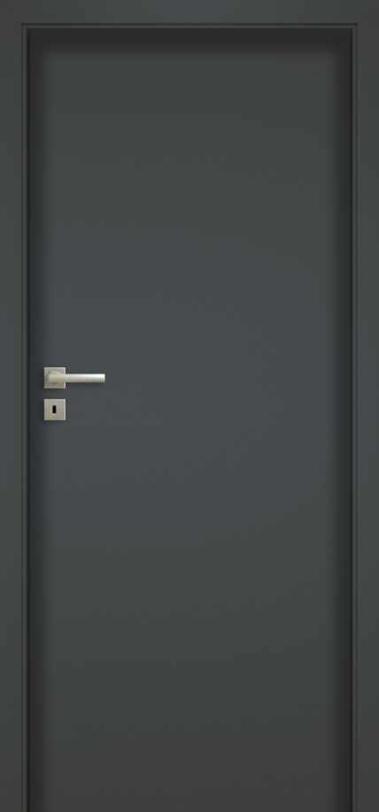
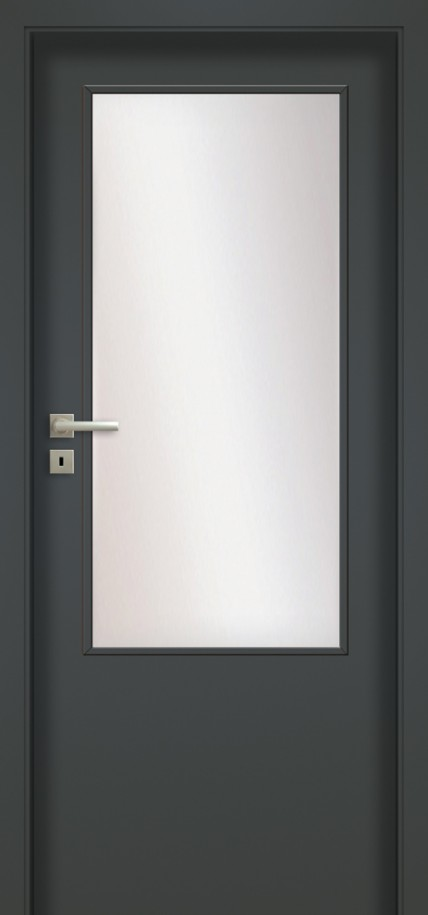
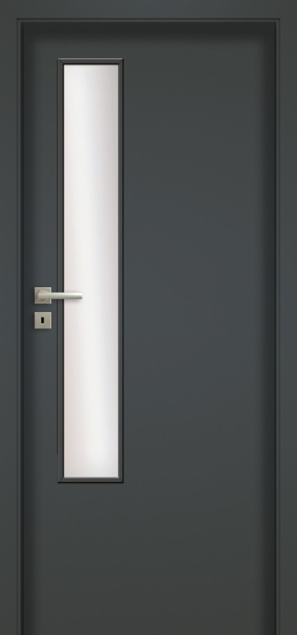
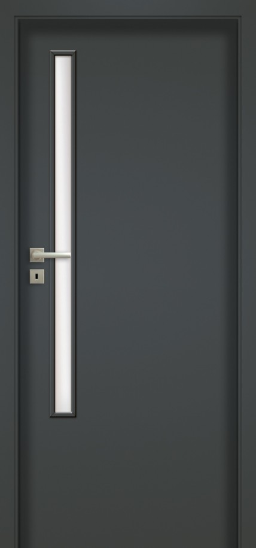
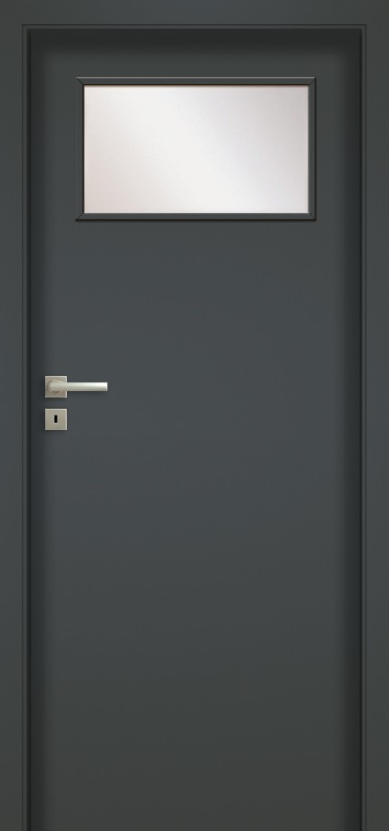

haptic

00

03SD

04

05

06
Dveře jsou zhotoveny z dřevěného rámu obloženého dvěma hladkými HDF deskami s povrchem UNI MAT PLUS. Standardní výplň tvoří vrstva se strukturou „medová plástev“. Pro materiál UNI MAT PLUS je charakteristický hedvábný povrch, který je odolný proti otiskům prstů.
Standardní provedení
jednobodový zámek, rozteč 72 mm (falcový systém) nebo magnetický (bezfalcový systém) zadlabaný, na klíč (rozteč 90 mm), na vložku (rozteč 85 mm) nebo s WC zamykáním (rozteč 90 mm)
panty: typ Z – pro zárubeň systému DIN
nebo skrytý DUO nikl satén (2 ks)


grafite

titano

bílá

béžová

černá

lava

stone

indigo

moss